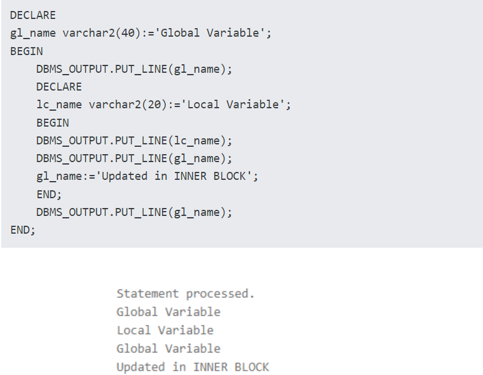

The scope of a variable is the block or blocks in which a PL/SQL variable is accessible. It means where it is declared and used. In PL/SQL variable scope is the block in which it is declared. The scope of a variable also extends to the nested blocks nested within the block where a variable is declared.
PL/SQL Variables Scope is of two kinds
Local– A variable declared in a block and accessed in the same block is local
Global– A variable declared in a block but accessed in all the sub-blocks is global
